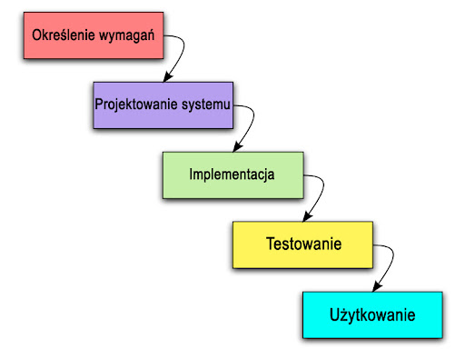
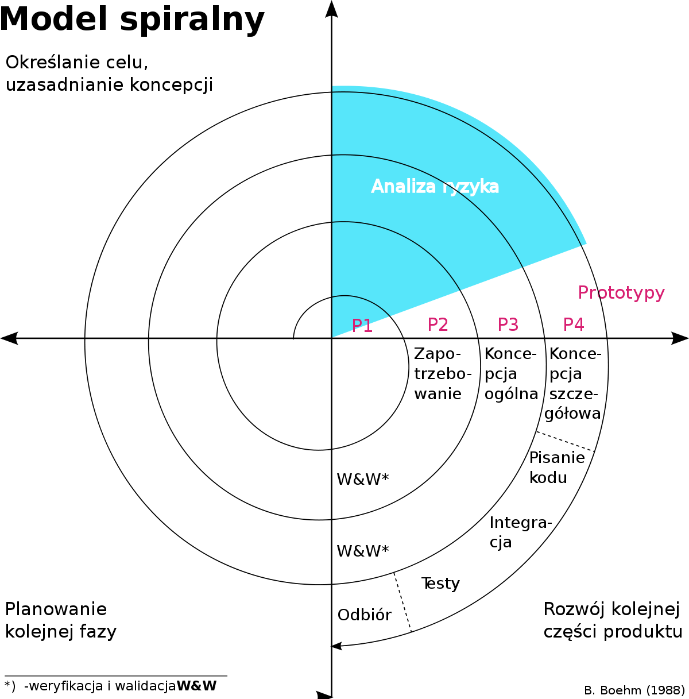

Narzędzia programistyczne (wykłady, semester 1)
Prowadzący: dr inż. Damian Ledziński
Języki kompilowane i interpretowane
-
interpretowane (skryptowe)
- aby uruchomić program (skrypt) w takim języku, konieczne jest posiadanie interpretera
- na przykład Python, JavaScript
-
kompilowane do postaci kodu maszynowego
- napisany program jest tłumaczony bezpośrednio na kod maszynowy, który jest wykonywany przez procesor
- na przykład C, C++, Rust
-
kompilowane do postaci kodu bajtowego
- napisany program jest tłumaczony do postaci kodu bajtowego, który nie jest wykonywany przez procesor, a przez maszynę wirtualną (na przykład JVM)
- na przykład C#, Java, Kotlin
Każdy język ma swoje zastosowania i zasadniczo żaden nie jest uniwersalny. Trzeba znać różnice między językami (i ich rodzajami) i wybierać konkretny język do danego zastosowania.
Automatyczne dokumentowanie kodu
Systemy automatycznego dokumentowania kodu umożliwiają generowanie dokumentacji na podstawie komentarzy o określonej składni.
Dokumentacja taka może być wyświetlana jako podpowiedź w IDE, lub można na jej podstawie wygenerować dokument (na przykład dokument HTML).
Przykładowe systemy automatycznego dokumentowania kodu to Javadoc (do Javy) i Pydoc (do Pytonga).
/**
* Metoda zwracająca sumę dwóch liczb
* @param liczba1 Pierwszy składnik sumy
* @param liczba2 Drugi składnik sumy
* @return Suma liczb przekazanych jako argument metody
*/
int suma(int liczba1, int liczba2) {
return liczba1 + liczba2;
}
Debugger
(takie same lub bardzo podobne występują we większości debuggerów)
-
step into
wykonuje po kolei kod programu po jednej instrukcji
step into powoduje wykonywanie instrukcji, która jest w aktualnym miejscu wykonania programu; jeżeli instrukcja ta jest wywołaniem procedury, nastepną wyświetloną instrukcją jest pierwsza instrukcja w tej procedurze. -
step into
działanie podobne do step into, za wyjątkiem przypadku gdy instrukcja zawiera wywołanie procedury
step over wykonuje procedurę jako jedną jednostkę, i przechodzi do następnej instrukcji w aktualnej procedurze
dlatego też, następną wyświetlaną instrukcją jest kolejna instrukcja w aktualnej procedurze, niezależnie czy jest ona wywołaniem innej procedury -
step out
powoduje wykonanie pozostałych linii funkcji, która jest aktuanie wykonywana
nastepną wyświetlaną instrukcją, jest instrukcja nastepująca po wywołaniu procedury
wykonywane są wszystkie linie kodu pomiędzy aktualnym punktem i końcowym
Systemy automatycznego budowania
- compile (kompiluj pliki)
- compile-test (kompiluj testy jednostkowe)
- test (wykonaj testy jednostkowe)
- package (pakowanie skompilowanego programu i zasobów, np. do pliku jar)
- install (instalowanie)
Jeżeli któryś z etapów budowania się nie powiedzie, to następne nie są wykonywane.
IDE
IDE - Integrated Development Environment
IDE umożliwia:
- tworzenie i edycję kodu źródłowego (uzupełnianie składni)
- kompilację, debugowanie i profilowanie
- tworzenie testów
- zarządzanie zależnościami (zależnośc = biblioteka)
- edycję GUI, edycję baz danych
- integrację z oprogramowaniem zewnętrznym (np. serwerem aplikacji)
- automatyczne generowanie diagramów, kodu i dokumentacji
Za najlepsze IDE uznaje się między innymi programy Jetbrains. Ich przykładowe IDE to PyCharm (do Pythona), PhpStorm (do PHP) i CLion (do C/C++).
Ctrl + Spacja - bardzo przydatny skrót, występuje we większości IDE; wywołuje on system podpowiadania, który może podpowiedzieć programiście jak dokończyć daną linijkę lub jak rozwiązać jakiś błąd, który wystąpił
Profiler
Wyrażenia regularne (Regexy)
- do walidacji łancuchów znaków
- do odszukiwania ciągów znaków spełniających wskazane warunki
- leniwe - będzie wyszukiwało jak najmniej
- zachłanne - będzie wyszukiwało jak najwięcej
Link do ściągi: [ściąga]
Sposoby oferowania usług sieciowych
- wynajmowanie fizycznych serwerów
- wynajmowanie VPS
- Kubernetes [konteneryzacja]
- Amazon Lambda, Google Firebase
Systemy kontroli wersji
Najpopularniejszy to Git, chociaż czasami wykorzystuje się też SVN.
Modele wytwarzania oprogramowania
Bardzo prosty, ale jednocześnie posiadający sporo wad.
Jest używany w projektach finansowanych z budżetu publicznego (bo takie rozwiązania narzuca polskie prawo).


Praca w krótkich cyklach, zwanych sprintami.
Więcej o Scrumie można przeczytać: (tutaj)